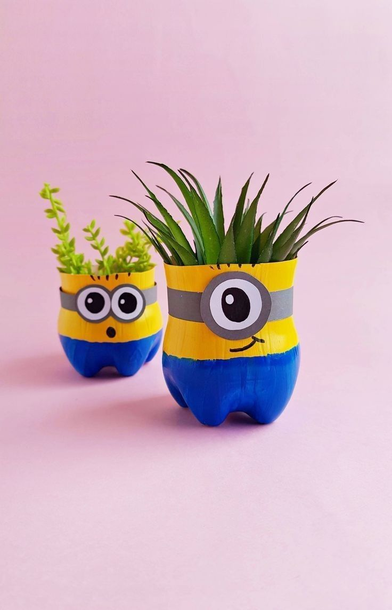
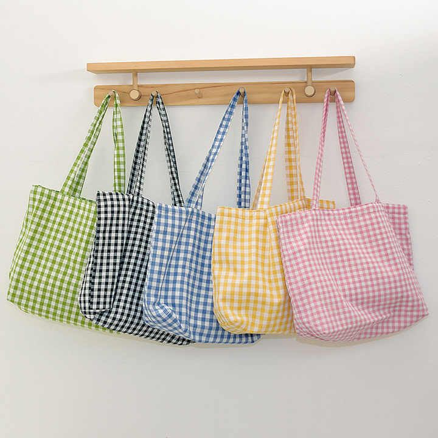
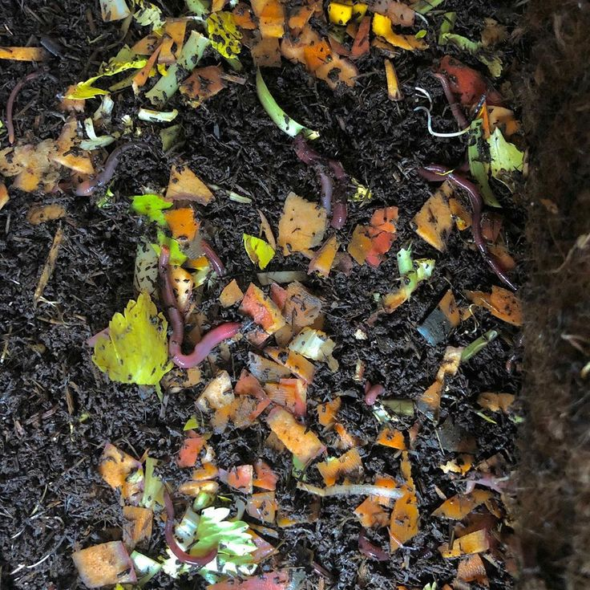

Bumi Tersenyum, Kita Berkarya.
Ubah plastik bekas dan sisa sampah organik menjadi lebih bermanfaat. Setiap langkah kecilmu ikut membentuk masa depan yang lebih bersih dan lebih bernilai bagi lingkungan.
Kreasi Terbaru Kami

Pot Tanaman Chic
Dibuat dari 100% sampah plastik daur ulang.

Tas Belanja Kain
Ganti kantong plastik Anda sekarang!

Super Kompos Organik
Nutrisi terbaik untuk tanaman dari sisa dapur.
Apa Kata Mereka?
Katalog Produk Hijau 🌍
Pilih kategori untuk melihat produk yang mengurangi sampah dan mendukung gaya hidup berkelanjutan.
Kreasi Plastik Daur Ulang
Dari sampah plastik yang Anda kumpulkan, kami sulap menjadi produk rumah tangga dan dekorasi yang cantik dan berguna.
Tas Kain (Reusable Bags)
Mulai hari bebas plastik! Tas kain berkualitas tinggi kami siap menemani belanja dan aktivitas harian Anda.
Pupuk Kompos Organik
Solusi alami untuk sampah organik Anda. Jadikan kebun Anda lebih hijau dengan pupuk dari sisa-sisa alam.
Misi Kami: Sampah Jadi Berkah
EcoKarya hadir karena kami percaya setiap orang punya peran untuk bikin bumi jadi tempat yang lebih layak dihuni. Dari masalah sampah yang makin numpuk, kami membangun gerakan yang mengajak masyarakat bersama-sama mengubah limbah jadi sumber daya yang beneran punya nilai.
Kg Sampah Plastik Didaur Ulang
Pelanggan Bergabung dengan Gerakan Hijau
Edukasi dan Aksi Nyata ♻️
Pelajari langkah-langkah sederhana yang bisa Anda lakukan hari ini untuk menjaga bumi tetap hijau.
Memilah Sampah: Kunci Daur Ulang Sukses
Sebelum sampah bisa diolah jadi barang baru, semuanya berawal dari satu kebiasaan sederhana: memilah. Dengan tahu mana yang plastik, kertas, atau organik, proses daur ulang bisa jalan jauh lebih maksimal.
- Plastik (PET, HDPE) - Botol minum, wadah sabun, dan kemasan rumah tangga lainnya. Pastikan sudah dicuci dan dikeringkan, ya.
- Kertas - Kardus bekas, koran, majalah, dan bahan kertas lain. Simpan terpisah dari sampah basah supaya tetap layak diproses.
- Organik - Sisa makanan, kulit buah, dan daun-daun kering dapat diubah jadi pupuk kompos yang bergizi untuk tanaman.
Punya sampah plastik bersih di rumah? Ayo tukar dengan produk EcoKarya favorit kamu! Kami buka layanan penukaran setiap Ahad, pukul 09.00-12.00 di lokasi kami.
Pentingnya Menjaga Lingkungan
Ngurusin bumi itu sebenarnya nggak serumit kedengerannya. Kadang cukup mulai dari hal kecil yang kita lakuin tiap hari. Kalau kita peduli sekarang, nanti planet ini masih enak ditinggali buat generasi setelah kita.
- Kurangi Sampah - Ganti plastik sekali pakai dengan tas kain yang bisa dipakai berkali-kali. Simpel, hemat, dan lebih ramah bumi.
- Hemat Air & Listrik - Matikan yang nggak dipakai. Kebiasaan kecil, tapi dampaknya besar
- Bikin Kompos - Sisa dapur bisa berubah jadi nutrisi buat tanaman, bukan cuma numpuk di TPA.
Kami hadir buat bantu langkah kecilmu. Mulai dari tas kain yang kuat & modis, sampai pupuk kompos berkualitas yang siap dipakai di rumah. Yuk mulai gaya hidup hijau dari diri sendiri. Kunjungi halaman produk!
Hubungi Kami
Kami siap membantu Anda memulai perjalanan ramah lingkungan Anda. Hubungi tim EcoKarya melalui kanal di bawah ini.